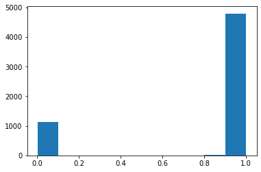

Convolutional Neural Network - Classifier
For training the CNN peroxisome model, we utilized Pex13 mutant cells, which expressed GFP-Cat signals throughout their cytoplasm.
The Classification diverged into three parts:
Set training data
Model Generation
Evaluation
The GFP-Cat images were then segmented into individual cells and saved into two separate folders - one for phenotypic images and another for normal peroxisomes.
from AIPyS import AIPS_cellpose as AC
For example, we used the CellPose model for segmenting the images (as described in section 2):
AIPS_pose_object = AC.AIPS_cellpose(Image_name = 'catGFP.tif', path = 'data', model_type = 'cyto', channels=[0,0])
img = AIPS_pose_object.cellpose_image_load()
The function stackObjects_cellpose_ebimage_parametrs_method similar to the R packadge EBimage (publish by Pau et. al. ) brekes the mask input into 150 pixel single-cell images.
AIPS_pose_object = AC.stackObjects_cellpose_ebimage_parametrs_method(Image_name = 'catGFP.tif', path = 'data', model_type = 'cyto', channels=[0,0])
img = AIPS_pose_object.cellpose_image_load()
mask, table = AIPS_pose_object.cellpose_segmantation(image_input=img[0,:,:])
##### Than EBimage like stacking function is used
stack, _ = AIPS_pose_object.stackObjects_cellpose_ebimage_parametrs_method(image_input=img[0, :, :],
extract_pixel=50,
resize_pixel=150,
img_label=table.index.values[i])
Pau G, Fuchs F, Sklyar O, Boutros M, Huber W (2010). “EBImage—an R package for image processing with applications to cellular phenotypes.” Bioinformatics, 26(7), 979–981. doi: 10.1093/bioinformatics/btq046.
The single-cell images are to be organized into a training structure consisting of three separate directories, training_data, validation_data and test_data, each containing two folders; one for positive samples (pheno) and one for negative samples (norm). The data is then ready to be used for machine learning model training and validation.
from AIPyS import Taining_data_orgenizer as orgenizer
pathInput = '/input_sc_mix'
pathOrigen = '/data/training_set'
labelA = 'norm'
labelB = 'pheno'
file_extention = 'png'
path_builder = orgenizer.classification_data_orgenizer(path_input = pathInput,
path_origen = pathOrigen,
label_A=labelA,
label_B =labelB,
file_extention =file_extention)
path_builder.get_file_names_list()
statment_a, statment_b, train_files, validate_files, test_files = path_builder.split_traning_set_and_copy()
Directory structure:
training_set
│
└───training_data
| │phno01.png
│ │norm01.png
│ │...
│
└───validation_data
| │pheno02.png
│ │norm02.png
│ │...
└───test_data
│pheno03.png
│norm03.pn
│...
The plotform contain four CNN models.
Basic CNN model
Basic CNN model with data Augmentation
Transfer learning drop layer 4 and 5
Transfer learning with Augmentation freez all layer
from AIPyS import model_builder as mb
We set hyperparamters for the model
train_dir = os.path.join(path_origen, 'training_data')
val_dir = os.path.join(path_origen, 'validation_data')
test_dir = os.path.join(path_origen, 'test_data')
batch = 30
epoch = 50
step_per_epoch = int((9930)/30)
validation_steps = int((1242)/30)
path_model = '/data/models'
IMG_DIM=(150,150,3)
imbalance_train = 921
imbalance_val = 115
model_name = '10precent.h5'
path_checkpoints = '/data/models/chakpoints_10p/'
Intiate model bulider:
model_build = mb.model_builder(IMG_DIM=(150,150,3),path_training=train_dir,path_validation=val_dir,
batch=batch, epoch = epoch,input_shape = (150,150,3) ,steps_per_epoch_sel= step_per_epoch,
validation_steps=validation_steps,path_model = path_model,file_extention = 'png',
extract_size_train = extract_size_train, extract_size_val=extract_size_val)
Image files are loaded and converted to tf tensor.
TRimgScale,ValimgScale,TRlabels,Valabels,TRimg,Valimg,report = model_build.build_image__sets()
print report
tarin labels:[‘norm’, ‘pheno’, ‘norm’, ‘norm’, ‘norm’], train_labels_enc:[0 1 0 0 0].
Train models:
cnn_basic = model_build.model_cnn_basic()
cnn_basic_Augmentation = model_build.model_cnn_basic_Augmentation()
cnn_transfer_learning_Augmentation_drop_layer_4and5 = model_build.model_cnn_transfer_learning_Augmentation_drop_layer_4and5()
transfer_learning_aug_dropout_freez_all = model_build.model_cnn_transfer_learning_Augmentation_freez_all()
Assess the efficacy of the model constructed by assessing its performance. First, the test files will be converted into tensors of model input pixel size.
test_imgs = [img_to_array(load_img(img, target_size=IMG_DIM)) for img in test_files]
test_imgs = np.array(test_imgs)
test_imgs_scaled = test_imgs.astype('float32')
test_imgs_scaled /= 255
The labels are assigned an integer value to be encoded.
test_labels = [fn.split('/')[1].split('_')[0].strip() for fn in test_files]
num2class_label_transformer = lambda l: ['norm' if x[0] == 0 else 'pheno' for x in l]
class2num_label_transformer = lambda l: [0 if x == 'pheno' else 1 for x in l]
test_labels_enc = class2num_label_transformer(test_labels[:5])
print('Test dataset shape:{}'.format(test_imgs.shape))
print(test_labels[0:5], test_labels_enc[0:5])
# {code-cell} ipython3
# :tags: [hide-input]
import tensorflow as tf
from tensorflow.keras.applications.vgg16 import VGG16
from tensorflow.keras.preprocessing import image
from tensorflow.keras.applications.vgg16 import preprocess_input, decode_predictions
import numpy as np
import glob
import numpy as np
import os
import shutil
import glob
from sklearn.model_selection import train_test_split
from sklearn.preprocessing import LabelEncoder
np.random.seed(42)
import matplotlib.pyplot as plt
from tensorflow.keras.preprocessing.image import ImageDataGenerator, load_img, img_to_array, array_to_img
from tensorflow.keras.layers import Conv2D, MaxPooling2D, Flatten, Dense, Dropout
from tensorflow.keras.models import Sequential
from tensorflow.keras import optimizers
from keras.applications import vgg16
from keras.models import Model
import keras
import pandas as pd
from keras.layers import Conv2D, MaxPooling2D, Flatten, Dense, Dropout, InputLayer
from keras.models import Sequential
from tensorflow.keras import optimizers
import glob
import numpy as np
import matplotlib.pyplot as plt
from keras.preprocessing.image import load_img, img_to_array, array_to_img
from keras.models import load_model
import os
os.chdir('/data/kanferg/Images/Pex_project/Transfer_learning/code')
from utils import model_evaluation_utils as meu
IMG_DIM = (150, 150)
os.chdir("/data/kanferg/Images/Pex_project/SIngle_cell_images_training_set/")
test_files = glob.glob('test_data/*')
test_imgs = [img_to_array(load_img(img, target_size=IMG_DIM)) for img in test_files]
test_imgs = np.array(test_imgs)
#test_files[0].split('/')[1].split('_')[0].strip()
test_labels = [fn.split('/')[1].split('_')[0].strip() for fn in test_files]
#test_labels = [fn.split('/')[1].split('.')[0].strip() for fn in test_files]
test_imgs_scaled = test_imgs.astype('float32')
test_imgs_scaled /= 255
num2class_label_transformer = lambda l: ['norm' if x[0] == 0 else 'pheno' for x in l]
class2num_label_transformer = lambda l: [0 if x == 'pheno' else 1 for x in l]
test_labels_enc = class2num_label_transformer(test_labels[:5])
print('Test dataset shape:{}'.format(test_imgs.shape))
print(test_labels[0:5], test_labels_enc[0:5])
Test dataset shape:(5967, 150, 150, 3)
['norm', 'pheno', 'norm', 'pheno', 'norm'] [1, 0, 1, 0, 1]
predictions = cnn_transfer_learning_Augmentation_drop_layer_4and5.predict(test_imgs_scaled, verbose=0)
plt.hist(predictions)
# {code-cell} ipython3
# :tags: [hide-input]
import warnings
warnings.filterwarnings('ignore')
path_model = '/data/kanferg/Images/Pex_project/Transfer_learning/models'
os.chdir(path_model)
cnn_transfer_learning_Augmentation_drop_layer_4and5 = load_model('cnn_transfer_learning_Augmentation_drop_layer_4and5.h5')
predictions = cnn_transfer_learning_Augmentation_drop_layer_4and5.predict(test_imgs_scaled, verbose=0)
plt.hist(predictions)
# classes_x=[np.where(lab >0.5,1,0).tolist() for lab in predictions]
# predictions_label = num2class_label_transformer(classes_x)
# predictions_label
# meu.get_metrics(test_labels, predictions_label)
(array([1.131e+03, 6.000e+00, 4.000e+00, 4.000e+00, 3.000e+00, 4.000e+00,
6.000e+00, 5.000e+00, 7.000e+00, 4.797e+03]),
array([0.00314956, 0.1028346 , 0.20251964, 0.3022047 , 0.40188974,
0.50157475, 0.6012598 , 0.70094484, 0.8006299 , 0.9003149 ,
1. ], dtype=float32),
<BarContainer object of 10 artists>)

classes_x=[np.where(lab >0.5,1,0).tolist() for lab in predictions]
predictions_label = num2class_label_transformer(classes_x)
predictions_label
meu.get_metrics(test_labels, predictions_label)
# {code-cell} ipython3
# :tags: [hide-input]
classes_x=[np.where(lab >0.5,1,0).tolist() for lab in predictions]
predictions_label = num2class_label_transformer(classes_x)
predictions_label
meu.get_metrics(test_labels, predictions_label)
Accuracy: 0.9943
Precision: 0.9944
Recall: 0.9943
F1 Score: 0.9943